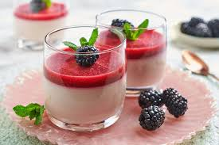

Panna Cotta

Description
Panna cotta is a popular Italian dessert known for its delicate and creamy texture.
The name "panna cotta" translates to "cooked cream" in Italian, which perfectly describes the dessert's main ingredients and preparation method.
Whether enjoyed as a light and refreshing treat on a warm summer day or as a luxurious finale to a special meal,
panna cotta is a beloved Italian dessert that captivates with its creamy texture and delightful flavors.
Ingredients
- 1/3 cup skim milk
- 1 (.25 ounce) envelope unflavored gelatin
- Two 1/2 cups heavy cream
- 1/2 cup white sugar
- One 1/2 teaspoons vanilla extract
Steps
- Pour milk into a small bowl. Sprinkle gelatin powder over milk and stir until combined. Set aside.
- Stir heavy cream and sugar together in a saucepan. Set over medium heat and bring to a boil; watch carefully as the cream can quickly bubble up and boil over.
- Immediately stir gelatin mixture into boiling cream, stirring until completely dissolved. Cook and stir for 1 minute.
- Remove the pan from the heat and stir in vanilla.
- Pour cream mixture into 6 individual ramekins. Leave to cool, uncovered, until no longer warm, about 20 minutes.
- When cool, cover with plastic wrap. Refrigerate until set, at least 4 hours but preferably overnight.